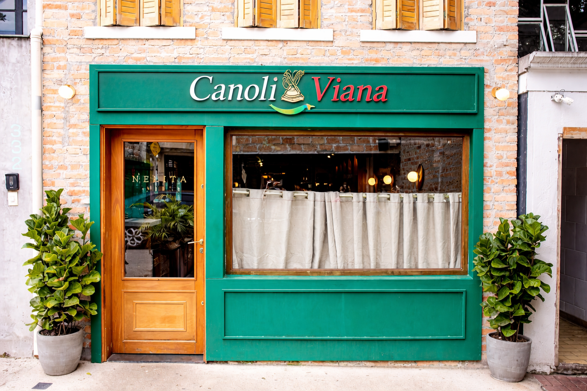
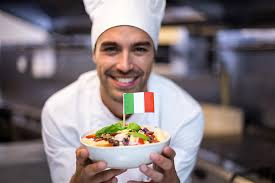

Sobre
DA ITÁLIA PARA O BRASIL Em 1948, desembarcava no Brasil a Imigrante Carmelia Vianna, que viria a criar, alguns anos depois, o Grupo Vianna. Além de sonhos, Carmellia trazia na bagagem toda a tradição da culinária italiana.
Em 1960 com o progresso do centro da cidade de São Paulo, o Carmelia mudou de endereço para a famosa e charmosa av. Vieira de Carvalho. Em 1978 Carmelia passou a direção do restaurante para seu amigo Antonio Carlos Marino, filho de italiano e amante da cozinha mediterrânea..


Chef claudio bizerret
Chef roman juleticeht
Chef barichelli oracio